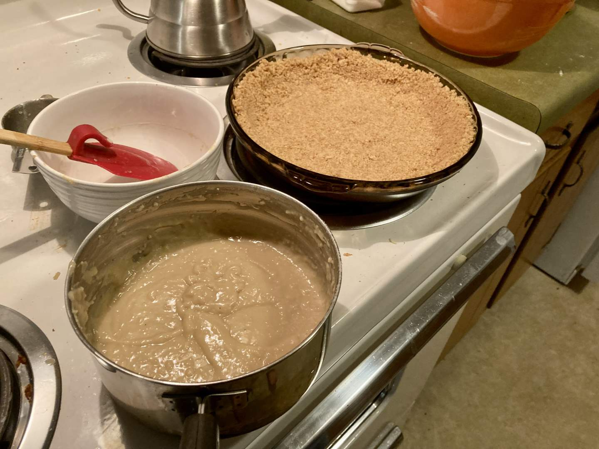

Pie 11: London Fog
2023-09-08Filling recipe modified from Celebration Generation.
Crust recipe from King Arthur Baking.
Taste:
Difficulty:
Vibes:
Suggested pairings: lasanga soup
Before embarking on this project, Ben and I compiled a list of pies we were interested in baking plus some we found researching bizarre pies. This week, spontaneous inspiration was lacking, so we consulted the document in search of a recipe that sparked our curiosity and intrigued our taste buds. Lo and behold, an Earl Grey pie did just that. It sounded delicious and different from the other pies we’ve made. We only had to acquire heavy whipping cream before making the pie, and I had been given high-quality Earl Grey tea from a friend, so it seemed perfect.
In a shocking role reversal, Ben prepared and blind-baked the crust (graham cracker) for this pie while I attended to the filling (custard). I began the filling by bringing milk and cream to a boil and steeping three tea bags. Ben suggested making this a London Fog pie, after the scrumptious bev crafted by adding vanilla and lavender to an Earl Grey tea latte. So we added a tablespoon of lavender buds to the steeping tea and a splash of vanilla to the egg and sugar mixture.
After straining the lavender and squeezing the tea bags, it was time to temper the eggs. I had heard of tempering before and seen it done, but it was a rather awkward process to do with only two hands. One had to dribble near-boiling cream into the eggs and the other had to whisk constantly to prevent egg-scramblization. Once the egg mixture had been sufficiently heated by adding the hot cream, I mixed the whole lot together, where again I had to whisk constantly as the custard was heated and thickened. Even with as much as I did, I still may have underwhisked, resulting in a custard not maximally smooth. This didn’t affect the taste.
Once the custard had cooled to room temperature, we poured it into the prepared pie crust, covered it in plastic wrap, and left it to chill overnight. When we returned from work the next day, Ben made homemade whipped cream which was plopped and smoothed over the custard. It was time for the final and most dangerous step in this pie’s creation: transporting it to Ben’s parents’ house with an anxious and exploratory cat in the same car. We used the plastic wrap again and added a further layer of protection by placing it into a lidded aluminum casserole dish (the kind used at potlucks).
The cat put up significant resistance to leaving the house and wanted to prowl around the backseat of the car during the drive. Fortunately for us all, he took no notice of the pie.
The first slice we cut from the pie was disappointing, hence the low rating on vibes. It seemed as if the custard had entirely disappeared! In response to my criticism that there was not enough whipped cream on the banoffee pie, Ben intentionally added more to this pie than he thought necessary. Unfortunately, though it may have balanced the richness of the caramel and banana layers on the banoffee pie, the London Fog custard was overwhelmed by the mountain of cream that sat atop it. The solution (per Katie Beth) to this would not be to add less whipped cream but to make the layer of custard more substantial. The taste of the pie was only minorly marred by the abundance of whipped cream. The layers were creamy, smooth, and not so sweet that the flavors of the pie weighed heavily upon one’s tongue. Each bite left me delighted and content.
Freezing the pie and cutting a new slice revealed the true thickness of the custard layer, but resulted in a less delicious cream. Ben's opinion is that he used too much whipped cream and should not have stopped at the soft-peak stage as the result did not hold its shape well enough.
This pie may become a staple of the Scott household since it is easy to make ahead, unique in flavor, and, most importantly, scrumptious! Though the particular situation of this pie may not have been ideal, with some minor improvements it could be great.